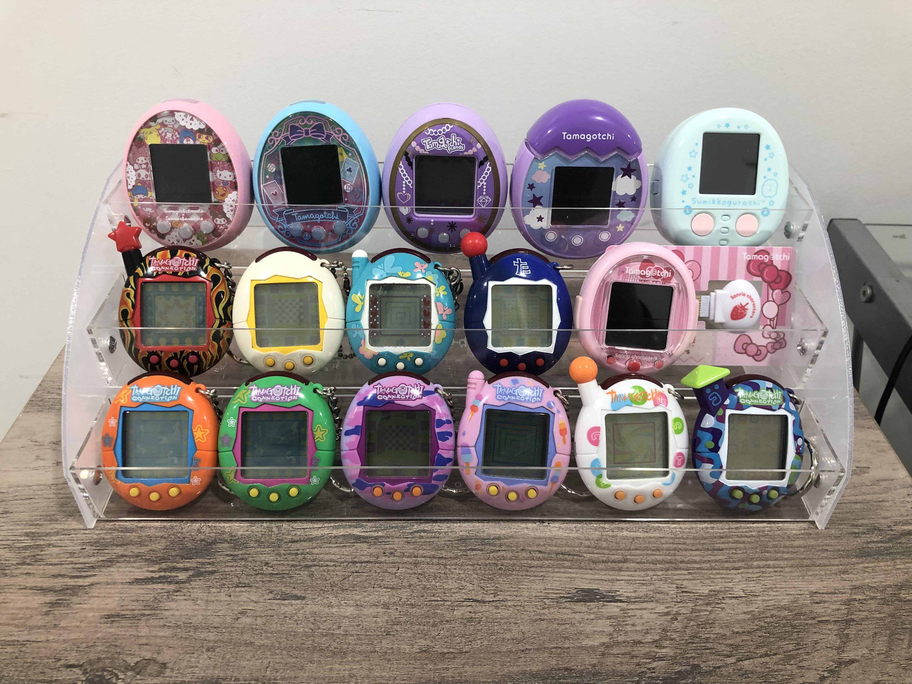

Tamagotchi Through the Years
Since their debut in 1996, Tamagotchi have gone through countless evolutions, from the original keychain pets to colorful, feature-rich modern releases. Each new version has introduced unique characters, gameplay mechanics, and designs—making them not just a nostalgic toy, but also a collector’s treasure. Over the years, Bandai has released dozens of variations, including the classic “P1” and “P2,” the Tamagotchi Connection line that allowed devices to link with each other, and more recent versions like the Tamagotchi On, Tamagotchi Smart, and Tamagotchi Uni, which bring modern features such as color screens, Bluetooth connectivity, and even smartwatch-style designs.
For collectors, each release carries its own charm and rarity. Some hunt for the earliest Japanese editions with their original packaging, while others focus on limited collaborations, regional exclusives, or themed shell designs that have become highly sought-after. The diversity of versions has created a thriving global community of fans who not only enjoy raising their digital pets but also take pride in curating unique collections that represent nearly three decades of Tamagotchi history.
Tamagotchi Customization
One of the most exciting parts of Tamagotchi culture is the creativity that fans bring to customizing their devices. Beyond the official shell colors and limited-edition designs released by Bandai, collectors often take things a step further to make their Tamagotchi truly one of a kind. From swapping faceplates and buttons to hand-painting shells with vibrant designs, customization has become a way for fans to express their personality and keep their devices feeling fresh and unique. Stickers, decals, and even miniature charms are commonly added, giving each Tamagotchi a personal touch that reflects the owner’s style.
Some collectors treat customization as an art form, carefully sanding, repainting, or decorating their shells to achieve professional-level designs, while others prefer simple additions like sparkling jewels, character stickers, or themed keychains. Online communities often share tutorials, showcase custom creations, and trade accessories, creating a supportive space for both beginners and seasoned modders. Whether subtle or bold, these customizations add another layer of enjoyment to the hobby, blending nostalgia with creativity and ensuring that no two collections are ever quite the same.

The Tamagotchi Community
Tamagotchi isn’t just about raising digital pets—it’s about the people who love them. From the earliest days of playground trades in the ’90s to today’s thriving online forums and social media groups, the community has always been at the heart of the Tamagotchi experience. Fans connect to share care tips, post pictures of their collections, and reminisce about the versions they grew up with. Dedicated websites, Discord servers, and even fan conventions keep the spirit alive, making Tamagotchi more than just a toy—it’s a shared passion that brings people together across generations and countries.
The community also plays a huge role in keeping the hobby vibrant and evolving. Collectors and enthusiasts often organize group orders for Japan-exclusive releases, create custom content like printable inserts and themed cases, and support each other in finding rare or discontinued devices. This culture of sharing and collaboration has ensured that Tamagotchi remains relevant decades after its debut. For many fans, the joy isn’t just in caring for their pixelated friends, but in being part of a global family that celebrates creativity, nostalgia, and connection.